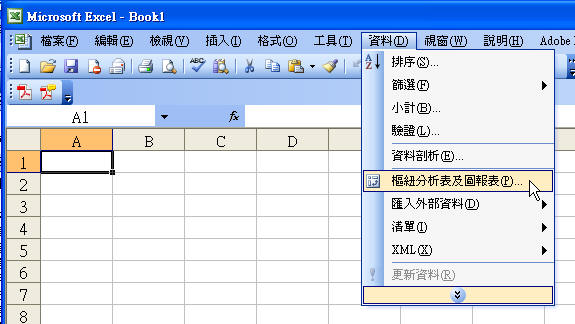

一般工程圖說完成後，通常還需要做數量計算，這部分牽涉到預算部份，所以如何細算常常造成很多困擾。
而每個人計算的工具皆不同，這裡分享一個大家手邊就有的功能，也就是軟體本身就有的，不需要再透過LISP等高階工具開發~
第一個我就想到AutoCAD的資料萃取，從2008版本開始這個功能顯得完整許多，我在論壇中也有分享過相關的影片~
再來加總計算就可以透過Excel來幫忙，一開始步驟稍嫌多一點，不過多練習幾次你就會上手啦，有問題請提出來討論!
以下範例用來計算所有不同RC牆的長度及面積，當然你也可以運用再算平面的面積，這時可以使用填充線來建立，一樣可以再透過Excel加總喔~
👇關於更多數量計算可以參考課程
https://autocad-tw.1shop.tw/s904si
第一步、使用資料萃取時，需要建立相關圖層，以下影片範例使用牆編號當做圖層名稱，即可透過圖層開關來一次選取物件。
AutoCAD 2008 資料萃取位置:

官網說明：「資料萃取」精靈
http://docs.autodesk.com/ACD/2011/CHT/filesACR/WS1a9193826455f5ff1c7e22710db287822c-7fb7.htm
第二步、製作樞紐分析表後，還可以依照需求分表格來進階計算，並計算不同牆厚的面積等等。
ExceL 2003 樞紐分析表位置:

官網說明：樞紐分析表